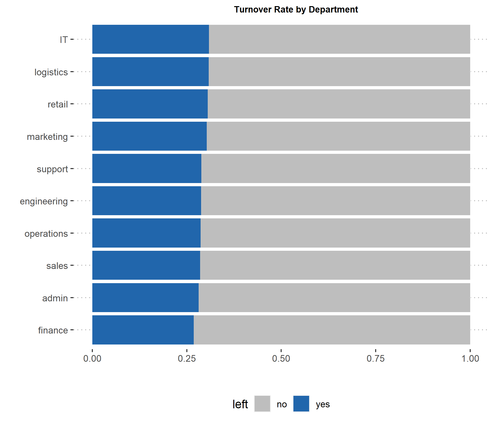
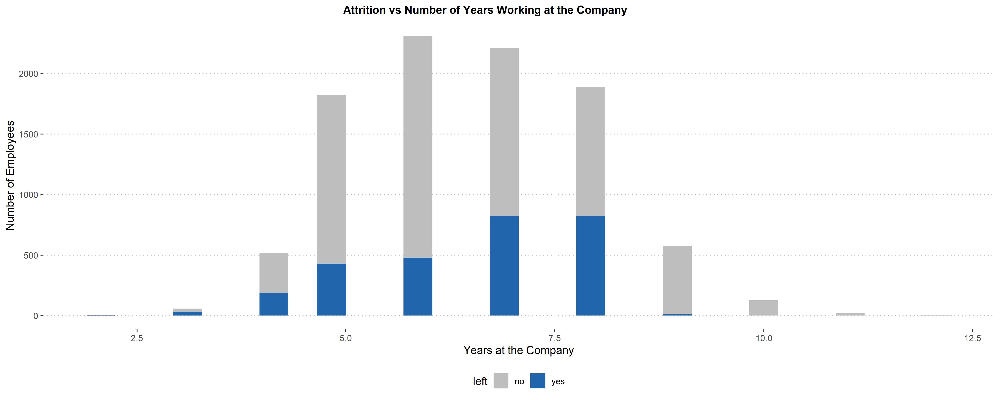
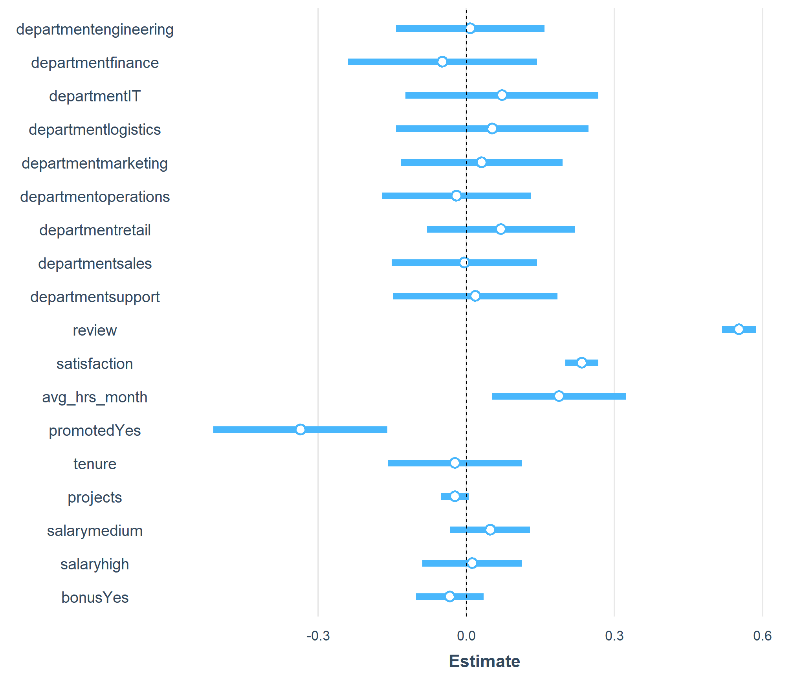
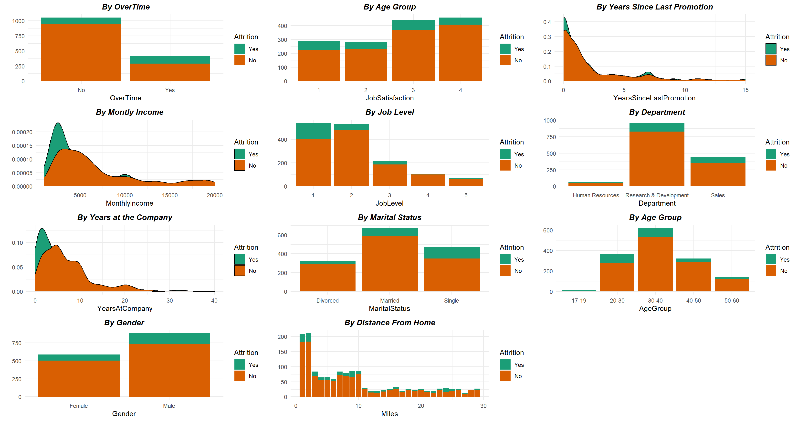
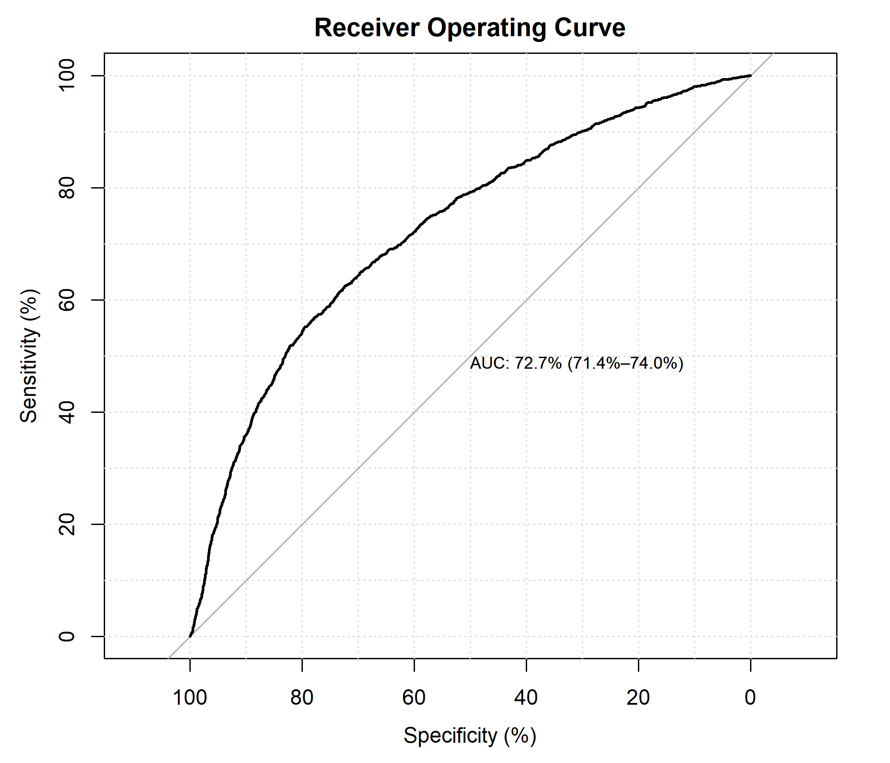

1. Background
You work for the human capital department of a large corporation. The Board is worried about the relatively high turnover, and your team must look into ways to reduce the number of employees leaving the company. The team needs to understand better the situation, which employees are more likely to leave, and why. Once it is clear what variables impact employee churn, you can present your findings along with your ideas on how to attack the problem.
Your challenge
Create a report that covers the following:
- Which department has the highest employee turnover? Which one has the lowest?
- Investigate which variables seem to be better predictors of employee departure.
- What recommendations would you make regarding ways to reduce employee turnover?
2. Import Libraries
- library(tidyverse)
- library(ggplot2)
- library(skimr)
- library(janitor)
- library(knitr)
- library(radiant)
- library(colorspace)
- library(gridExtra)
- library(jtools)
- library(dplyr)
- library(MASS)
3. Prepare and Analyze the Data
The department has assembled data on almost 10,000 employees. The team used information from exit interviews, performance reviews, and employee records.
The variables are defined as follow:
- “department” - the department the employee belongs to.
- “promoted” - 1 if the employee was promoted in the previous 24 months, 0 otherwise.
- “review” - the composite score the employee received in their last evaluation.
- “projects” - how many projects the employee is involved in.
- “salary” - for confidentiality reasons, salary comes in three tiers: low, medium, high.
- “tenure” - how many years the employee has been at the company.
- “satisfaction” - a measure of employee satisfaction from surveys.
- “bonus” - 1 if the employee received a bonus in the previous 24 months, 0 otherwise.
- “avg_hrs_month” - the average hours the employee worked in a month.
- “left” - “yes” if the employee ended up leaving, “no” otherwise.
| Name | empl_turnover |
| Number of rows | 9540 |
| Number of columns | 10 |
| _______________________ | |
| Column type frequency: | |
| character | 3 |
| numeric | 7 |
| ________________________ | |
| Group variables | None |
Variable type: character
| skim_variable | n_missing | complete_rate | min | max | empty | n_unique | whitespace |
|---|---|---|---|---|---|---|---|
| department | 0 | 1 | 2 | 11 | 0 | 10 | 0 |
| salary | 0 | 1 | 3 | 6 | 0 | 3 | 0 |
| left | 0 | 1 | 2 | 3 | 0 | 2 | 0 |
Variable type: numeric
| skim_variable | n_missing | complete_rate | mean | sd | p0 | p25 | p50 | p75 | p100 | hist |
|---|---|---|---|---|---|---|---|---|---|---|
| promoted | 0 | 1 | 0.03 | 0.17 | 0.00 | 0.00 | 0.00 | 0.00 | 1.00 | ▇▁▁▁▁ |
| review | 0 | 1 | 0.65 | 0.09 | 0.31 | 0.59 | 0.65 | 0.71 | 1.00 | ▁▃▇▃▁ |
| projects | 0 | 1 | 3.27 | 0.58 | 2.00 | 3.00 | 3.00 | 4.00 | 5.00 | ▁▇▁▅▁ |
| tenure | 0 | 1 | 6.56 | 1.42 | 2.00 | 5.00 | 7.00 | 8.00 | 12.00 | ▁▇▇▂▁ |
| satisfaction | 0 | 1 | 0.50 | 0.16 | 0.00 | 0.39 | 0.50 | 0.62 | 1.00 | ▁▅▇▅▁ |
| bonus | 0 | 1 | 0.21 | 0.41 | 0.00 | 0.00 | 0.00 | 0.00 | 1.00 | ▇▁▁▁▂ |
| avg_hrs_month | 0 | 1 | 184.66 | 4.14 | 171.37 | 181.47 | 184.63 | 187.73 | 200.86 | ▁▆▇▂▁ |
- There is no missing data in the data set.
- Employees are involved between 2 to 5 projects
- Employees have been at the company between 2 to 12 years, with an average of 6.5 years
- The average satisfaction rate in 50.41% for all employees
- The average worked hours per month ranged from 171.37 to 200.86 hours
- There are some data types that need to be changed. For example, “left” is a character variable. To convert it into a quantity that takes values of zero and one, I’ll convert it into a variable of type factor with two levels: No and Yes. Later, I will use as.numeric() to convert the observations to a number, one or two. I then subtract one to get a variable that takes values zero or one and stores it as left.Numeric
Show the code
empl_turnover$department <- as.factor(empl_turnover$department)
empl_turnover$left<- as.factor(empl_turnover$left)
empl_turnover$promoted<- as.factor(empl_turnover$promoted)
empl_turnover$bonus<- as.factor(empl_turnover$bonus)
empl_turnover$salary<- factor(empl_turnover$salary, levels = c("low", "medium", "high"))
empl_turnover$left.Numeric <- as.numeric(as.factor(empl_turnover$left))-1
glimpse(empl_turnover)Rows: 9,540
Columns: 11
$ department <fct> operations, operations, support, logistics, sales, IT, a…
$ promoted <fct> 0, 0, 0, 0, 0, 0, 0, 0, 0, 0, 0, 0, 0, 0, 0, 0, 0, 0, 0,…
$ review <dbl> 0.5775687, 0.7518997, 0.7225484, 0.6751583, 0.6762032, 0…
$ projects <int> 3, 3, 3, 4, 3, 2, 4, 4, 4, 3, 4, 3, 3, 3, 3, 3, 4, 4, 3,…
$ salary <fct> low, medium, medium, high, high, medium, high, medium, l…
$ tenure <dbl> 5, 6, 6, 8, 5, 5, 5, 7, 6, 6, 5, 5, 6, 5, 6, 6, 6, 5, 6,…
$ satisfaction <dbl> 0.6267590, 0.4436790, 0.4468232, 0.4401387, 0.5776074, 0…
$ bonus <fct> 0, 0, 0, 0, 1, 1, 0, 1, 0, 0, 0, 1, 0, 0, 0, 0, 0, 0, 0,…
$ avg_hrs_month <dbl> 180.8661, 182.7081, 184.4161, 188.7075, 179.8211, 178.84…
$ left <fct> no, no, no, no, no, no, no, no, no, no, no, no, no, no, …
$ left.Numeric <dbl> 0, 0, 0, 0, 0, 0, 0, 0, 0, 0, 0, 0, 0, 0, 0, 0, 0, 0, 0,…Turnover
Number of employees that left the company:
The overall attrition rate in the company is 29.2%, which means that 2,784 of 9,540 employees have left the company over the past 24 months.
Show the code
empl_turnover_left <- single_prop(empl_turnover, var = "left", lev = "yes")
summary(empl_turnover_left)Single proportion test (binomial exact)
Data : empl_turnover
Variable : left
Level : yes in left
Confidence: 0.95
Null hyp. : the proportion of yes in left = 0.5
Alt. hyp. : the proportion of yes in left not equal to 0.5
p ns n n_missing sd se me
0.292 2,784 9,540 0 0.455 0.005 0.009
diff ns p.value 2.5% 97.5%
-0.208 2,784 < .001 0.283 0.301 ***
Signif. codes: 0 '***' 0.001 '**' 0.01 '*' 0.05 '.' 0.1 ' ' 1Are the employees leaving the different departments at the same rate?
- The data shows that the IT department has the highest employee turnover rate, followed by logistics and retail. Finance has the lowest rate.
Show the code
empl_turnover_prop <- empl_turnover %>%
tabyl(department, left) %>%
adorn_percentages("row") %>%
mutate(Perc_empl_left = paste0(round(yes * 100),"%"))
kable(empl_turnover_prop, caption = "Department vs Attrition")| department | no | yes | Perc_empl_left |
|---|---|---|---|
| admin | 0.7186761 | 0.2813239 | 28% |
| engineering | 0.7117414 | 0.2882586 | 29% |
| finance | 0.7313433 | 0.2686567 | 27% |
| IT | 0.6910112 | 0.3089888 | 31% |
| logistics | 0.6916667 | 0.3083333 | 31% |
| marketing | 0.6970075 | 0.3029925 | 30% |
| operations | 0.7135348 | 0.2864652 | 29% |
| retail | 0.6943543 | 0.3056457 | 31% |
| sales | 0.7148168 | 0.2851832 | 29% |
| support | 0.7115646 | 0.2884354 | 29% |
Show the code
empl_turnover$reordept <-reorder(empl_turnover$department, empl_turnover$left,
FUN=function(x) mean(as.numeric(x)))
plot_depart <- empl_turnover %>%
ggplot(aes(x = reordept, fill = left)) +
geom_bar(position = "fill")+
scale_fill_manual(values=c("gray", "#2166AC"))+
labs(title = "Turnover Rate by Department",
y= " ",
x= " ") +
coord_flip() +
ggpubr::theme_pubclean()+
theme(
plot.title = element_text(size =9, face = "bold", hjust = 0.55),
legend.position="bottom")
plot_depart
Attrition vs Years at the company
The majority of employees that left the organization, had been working for the company between 5 to 8 years, and the proportion steadily declined.
What does it mean for the organization? Well,
Show the code
### Tenure vs Turnover
empl_turnover %>%
group_by(tenure, left)%>%
ggplot(aes(x = tenure, fill = left)) +
geom_histogram(bins = 30L) +
scale_fill_manual(values=c("gray", "#2166AC"))+
ggpubr::theme_pubclean()+
labs( x= "Years at the Company",
y= "Number of Employees",
title = "Attrition vs Number of Years Working at the Company")+
theme(plot.title = element_text(size =12, face = "bold", hjust = 0.45),
legend.position="bottom")
Do the number of projects employees are involved in and the number of hours per month worked matter in their retention?
Yes, there is a high attrition rate in employees that: - Are involved in less than three projects - Tend to work ~184 hours per month (assuming a five days work week- 8 hours each)
Show the code
## Projects vs Turnover
projects_turnover <- compare_props(
empl_turnover,
var1 = "projects",
var2 = "left",
levs = "yes")
plot_proj <- plot(projects_turnover, plots = "bar", custom = TRUE)+
labs(title = "Attrition vs Number of Projects",
y = " Percentage of Employees that Left",
x = "Number of Projects Involved in") +
scale_fill_discrete_diverging("Blue-Red")+
ggpubr::theme_pubclean()+
theme( plot.title = element_text(size =10,
face = "bold",
hjust = 0.55),
legend.position="none")
## Avg hours vs Turnover
plot_avg_hrs_month <- empl_turnover %>%
ggplot() +
aes() +
geom_histogram(aes(y = ..density.., x = avg_hrs_month, fill = left), bins=30, )+
facet_wrap(~ left) +
scale_y_continuous(labels = scales::percent)+
labs(title = "Attrition vs Avg Hours Worked",
y = "Employment Status (Left)",
x = "Number of hours worked") +
scale_fill_manual(values=c("gray", "#2166AC"))+
ggpubr::theme_pubclean()+
theme( plot.title = element_text(size =10, face = "bold", hjust = 0.55),
legend.position="none")
Attrition vs Promotion, Bonus and Salary
Most employees are in the medium salary tier, with the rest evenly split between low and high salaries. However, this variable is no significant impact on the turnover status of the employee. Likewise, whether or not an employee received a bonus is not statistically significant on the decision to stay or leave the company.
The promotion variable shows a higher proportion of employees had stayed with the organization if they had received a promotion.

Employee Satisfaction and Review score
- Employees tend to have lower satisfaction ratings as performance scores increase across employees. As the chart below shows, this feature is more appreciable for employees who have left the company in the last 24 months.
Show the code
plot_rev_sat_left<- empl_turnover %>%
ggplot(aes(x=review,y= satisfaction, color=left)) +
geom_point(alpha=0.16) +
geom_smooth(method=lm,se=FALSE)+
facet_wrap(~department, ncol=4)+
ggpubr::theme_pubclean()+
labs (x = "Review",
y = "Satisfaction Level",
title= "") +
theme(
strip.background= element_rect(fill= "white", linetype = "blank"),
strip.text = element_text(color= "black", face= "bold"),
strip.text.x = element_text(face = "bold", size= 10),
plot.title = element_text(size =9, face = "bold", hjust = 0.55),
plot.title.position = "plot")+
scale_color_manual(values=c("gray", "#2166AC"))
plot_rev_sat_left
4. The Model
A Scaled Coefficient Plot
The graph below shows that not all the predictors are important in deciding to leave the company. Review, satisfaction, promoted and avg_hrs_month, by conventional standards, have a very low probability of no relationship/zero slopes.
Show the code
empl_turnover %>%
mutate(review = scale(review), satisfaction = scale(satisfaction), tenure = scale(tenure),projects = scale(projects), avg_hrs_month = scale(avg_hrs_month)) %>%
glm(left ~ department+ review+ satisfaction+ avg_hrs_month+ promoted+ tenure+ promoted+ projects+ salary+ bonus,
family = binomial(link = "probit"), data = .) %>%
plot_summs(., inner_ci_level = 0.95)
Logistic Regression
For my model I will use the following variables: promoted, review, projects, satisfaction, and average hours worked. This decision was made based on an stepwise regression model (using both forward selection and backward elimination) where all the variables were included and the once with low colinearity were eliminated.
Show the code
empl_tur<- empl_turnover %>% dplyr:::select(c(-reordept, -left.Numeric))Show the code
full.model <- glm(left~ department+ promoted+ review+ projects+
salary+ tenure+ satisfaction+ bonus+ avg_hrs_month,
data = empl_tur, family = binomial)
summary(full.model)
Call:
glm(formula = left ~ department + promoted + review + projects +
salary + tenure + satisfaction + bonus + avg_hrs_month, family = binomial,
data = empl_tur)
Deviance Residuals:
Min 1Q Median 3Q Max
-2.4381 -0.8205 -0.6034 1.0706 2.7779
Coefficients:
Estimate Std. Error z value Pr(>|z|)
(Intercept) -21.493059 4.739307 -4.535 5.76e-06 ***
departmentengineering 0.010344 0.130062 0.080 0.936608
departmentfinance -0.070328 0.165088 -0.426 0.670107
departmentIT 0.121550 0.168377 0.722 0.470360
departmentlogistics 0.098104 0.167795 0.585 0.558773
departmentmarketing 0.043406 0.141465 0.307 0.758972
departmentoperations -0.028534 0.129996 -0.219 0.826263
departmentretail 0.114473 0.129461 0.884 0.376575
departmentsales -0.005853 0.127297 -0.046 0.963328
departmentsupport 0.024313 0.144010 0.169 0.865934
promotedYes -0.558972 0.156892 -3.563 0.000367 ***
review 11.160858 0.363223 30.727 < 2e-16 ***
projects -0.067532 0.041581 -1.624 0.104350
salarymedium 0.075272 0.069816 1.078 0.280970
salaryhigh 0.018895 0.087327 0.216 0.828700
tenure -0.011131 0.082660 -0.135 0.892880
satisfaction 2.457897 0.186556 13.175 < 2e-16 ***
bonusYes -0.057958 0.059113 -0.980 0.326853
avg_hrs_month 0.066040 0.028298 2.334 0.019609 *
---
Signif. codes: 0 '***' 0.001 '**' 0.01 '*' 0.05 '.' 0.1 ' ' 1
(Dispersion parameter for binomial family taken to be 1)
Null deviance: 11520 on 9539 degrees of freedom
Residual deviance: 10337 on 9521 degrees of freedom
AIC: 10375
Number of Fisher Scoring iterations: 4Let’s split the data
Show the code
set.seed(123)
data_split <- initial_split(empl_tur, prop = 3/4)
train.data <- training(data_split)
test.data <- testing(data_split)Computing stepwise logistique regression
Show the code
# Fit the model
model <- glm(left ~ department+ promoted+ review+ projects+
salary+ tenure+ satisfaction+ bonus+ avg_hrs_month,
data = train.data, family = binomial) %>%
stepAIC(trace = FALSE)
# Summarize the final selected model
summary(model)
Call:
glm(formula = left ~ promoted + review + satisfaction + bonus +
avg_hrs_month, family = binomial, data = train.data)
Deviance Residuals:
Min 1Q Median 3Q Max
-2.0471 -0.8148 -0.5930 1.0487 2.7958
Coefficients:
Estimate Std. Error z value Pr(>|z|)
(Intercept) -20.765742 1.441891 -14.402 < 2e-16 ***
promotedYes -0.586594 0.178620 -3.284 0.00102 **
review 11.655310 0.428243 27.217 < 2e-16 ***
satisfaction 2.680873 0.219774 12.198 < 2e-16 ***
bonusYes -0.131276 0.069554 -1.887 0.05911 .
avg_hrs_month 0.058488 0.006937 8.431 < 2e-16 ***
---
Signif. codes: 0 '***' 0.001 '**' 0.01 '*' 0.05 '.' 0.1 ' ' 1
(Dispersion parameter for binomial family taken to be 1)
Null deviance: 8595.3 on 7154 degrees of freedom
Residual deviance: 7660.6 on 7149 degrees of freedom
AIC: 7672.6
Number of Fisher Scoring iterations: 4Perform stepwise variable selection
Select the most contributive variables:
Show the code
step.model <- full.model %>% stepAIC(trace = FALSE)
coef(step.model) (Intercept) promotedYes review projects satisfaction
-20.78275350 -0.56064635 11.15148701 -0.06756327 2.45678963
avg_hrs_month
0.06220750 Show the code
library(LogisticDx)
model_diagnostics <- LogisticDx::gof(step.model, plotROC = TRUE)
Show the code
model2 <- glm(formula = left ~ promoted + review + satisfaction + bonus + tenure + avg_hrs_month, family = binomial, data = train.data)
coef(model2) (Intercept) promotedYes review satisfaction bonusYes
-24.92708321 -0.58724188 11.66591046 2.67842602 -0.13178813
tenure avg_hrs_month
-0.07543137 0.08367092 Show the code
model_diagnostics2 <- LogisticDx::gof(model2, plotROC = TRUE)
```